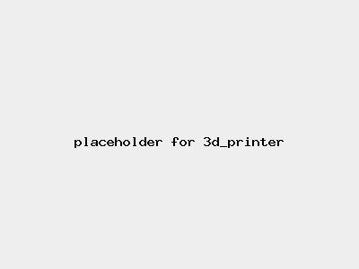

Risk Assessment / 3D Printer
Medium Risk
| Risk Assessment / 3D Printer | Level 2 Medium Risk |
|  |
|
| Before | During | After |
|---|---|---|
|
|
|
| Hazard | Persons | Before Controls | Controls | After Controls | ||||
|---|---|---|---|---|---|---|---|---|
| Severity | Likelihood | Risk | Severity | Likelihood | Risk | |||
| Inhalation of fumes | Anyone in the vicinity | Level 1 Minor injury | Level 4 Likely | Level 2 Medium |
| Level 1 Minor injury | Level 2 Unlikely | Level 1 Low |
| Burns to fingers or hands | Persons working inside machine | Level 2 Significant injury | Level 2 Unlikely | Level 2 Medium |
| Level 2 Significant injury | Level 0 Theoretical | Level 1 Low |
| Entrapment in moving machinery | Persons working inside machine | Level 2 Significant injury | Level 3 May happen | Level 2 Medium |
| Level 2 Significant injury | Level 0 Theoretical | Level 1 Low |